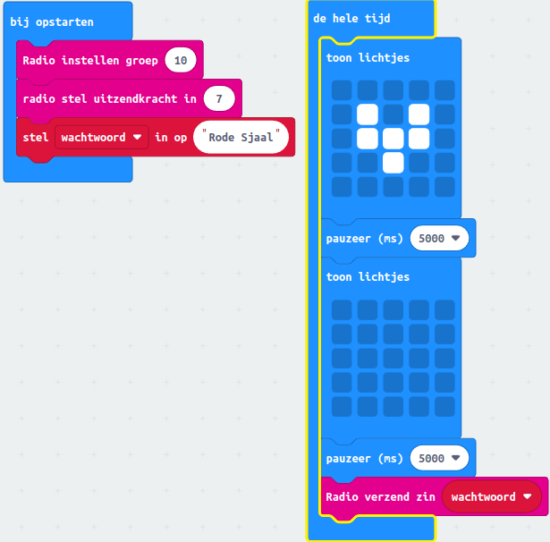
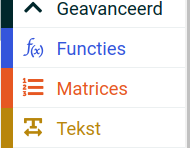
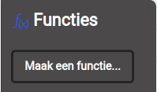
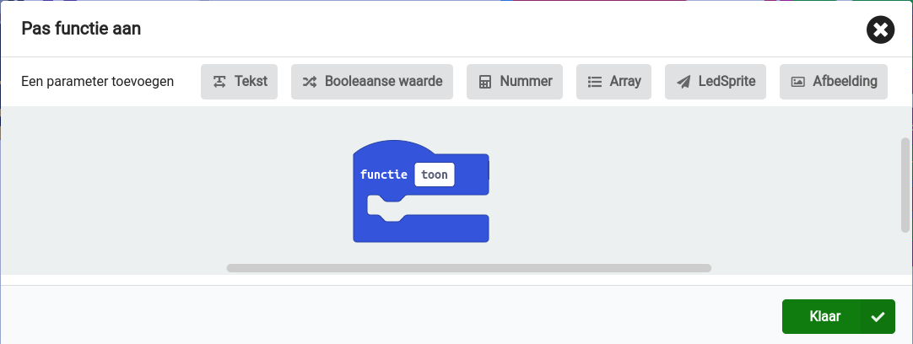
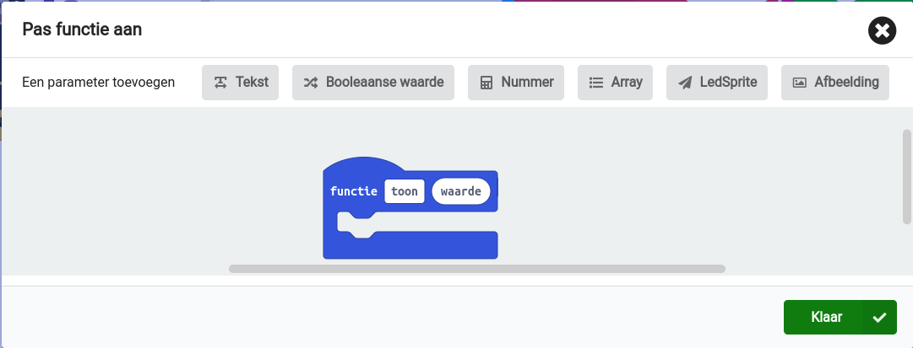
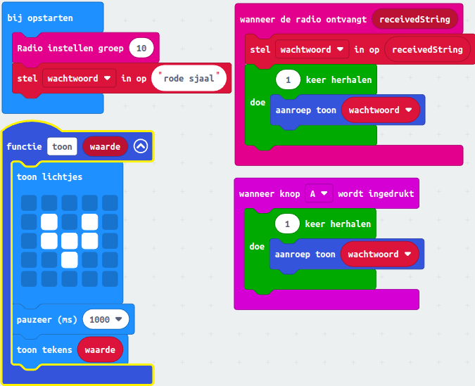

3. Radio communicatie tussen Micro:bits
De Micro:bit is een klein apparaatje dat goed kan praten met andere Micro:bits. We gaan een leuk spel spelen dat 'Vossenjacht' heet! Eén iemand is de 'vos' en de andere kinderen gaan hem/haar zoeken. De 'vos' draagt een Micro:bit om zijn/haar nek en heeft ook iets anders aan waaraan je hem/haar kan herkennen. Op het scherm van de Micro:bit van de 'vos' verschijnt om de 5 seconden een plaatje van een vos. De 'vos' heeft zich verstopt en alle andere kinderen hebben ook een Micro:bit. Als de andere kinderen dichtbij de 'vos' komen, dan stuurt de Micro:bit van de 'vos' een wachtwoord met een beschrijving waaraan je hem/haar kan herkennen.
Inhoud
Inleiding
Hey, ik ga je meer vertellen over het toffe spel "Vossenjacht", dat je kunt maken met je micro:bit. Eén van jullie zal de "vos" zijn en hij draagt een micro:bit om zijn nek. Je kunt de "vos" herkennen aan een bericht dat zijn of haar micro:bit uitzendt.
Het bericht wordt verstuurt via "radio communicatie" en je hebt er geen wifi voor nodig om het te gebruiken. De blokken om het te gebruiken staan in de categorie "Radio".
De rest van jullie zijn de "jagers" en jullie hebben ook een micro:bit die op hetzelfde kanaal als de "vos" staat ingesteld. De micro:bit van de "vos" stuurt een bericht over iets wat de "vos" kenmerkt en jullie moeten hem vinden!
In een open ruimte kun je de "vos" tot wel 70 meter ver weg vinden, maar als er muren of andere obstakels zijn, zal de afstand korter zijn. Als je dichtbij genoeg bent, krijg je een bericht op je micro:bit en moet je de "vos" vinden!
Het allerleukste is natuurlijk als je dit spel met al je vriendjes speelt. Nodig ze dus uit om mee te doen! Je kunt de blokken in de categorie "Radio" gebruiken om het spel te programmeren en te spelen.
Wat je nodig hebt
- BBC Micro:bit – Go:Bundle V2.
- Micro USB aan Standaard USB kabel (is onderdeel van de bovenvermelde kit).
- BBC Micro:bit voor elke jager.
- Extra AAA batteij houder en twee AAA batterijen voor elke jager.
- Laptop met een moderne browser (Chrome, Firefox, Safari) met een standaard USB aansluiting.
De Coderdojo club van LeusdeZet in Leusden heeft voldoende micro:bits om het spel mee te spelen.
Wat je gaat doen
Stap 1: de vos maken.
Stap 2: een jager maken.
Stap 3: het vossenspel testen.
Voorwaarden
- Je hebt les 1 en 2 van deze Micro:bit cursus gevolgd.
Stap 1 - de vos maken
Je bent inmiddels zo gevorderd dat je dit diagram makkelijk kunt begrijpen. De vos zendt een wachtwoord uit waaraan hij of zij te herkennen is en dat de jager tegen de vos moet zeggen.

Bespreking van de code
Tijdens het starten van de micro:bit wordt voor het uitzendkanaal 10 gekozen. De sterkte van het signaal staat op 7 en dat betekent dat het bericht op maximale sterkte wordt uitgezonden.
Tevens wordt het wachtwoord gezet op "rode sjaal". Hieraan is de vos te herkennen. Maar het wachtwoord moet je moet je wel veranderen!
In het "de hele tijd" blok wordt het symbool van de vos gedurende 5 secnden op het led-display getoond, zodat de jager weet dat het de vos. Tevens wordt het wachtwoord uitgezonden, dat uiteindelijk op het led-display te lezen is.
Test je kennis
Het doel van deze test is om te controleren of je het spel en de code goed begrijpt. De antwoorden staan in de bijlage.
Op welk kanaal wordt het bericht uitgezonden tijdens het starten van de micro:bit?
- Kanaal 5
- Kanaal 7
- Kanaal 10
Wat betekent een sterkte van 7 voor het uitgezonden signaal?
- Het signaal wordt niet uitgezonden
- Het signaal wordt zwak uitgezonden
- Het signaal wordt op maximale sterkte uitgezonden
Waarom moet het wachtwoord veranderd worden?
- Om de jagers in de war te brengen
- Om te voorkomen dat de vos gevangen wordt
- Om de veiligheid van het spel te waarborgen
Hoe lang wordt het symbool van de vos op het led-display getoond?
- 2 seconden
- 5 seconden
- 10 seconden
Stap 2 - een jager maken
In het spel moet de jager het wachtwoord van een vos weten om de vos te kunnen vangen. De jager ziet het wachtwoord op zijn scherm en zegt het dan tegen de vos.
Maar nu gaan we iets nieuws leren: een functie! Een functie is een soort gereedschap in het programmeren waarmee je taken gemakkelijk kunt hergebruiken in een programma. Je kunt een grote taak opdelen in kleine stukjes code die elk een kleine taak doen. Wanneer je de functie gebruikt, doet het wat je vraagt en geeft het resultaat terug.
We gaan een functie maken die het wachtwoord toont, als je het van de vos via de radio ontvangt. We gaan de functie ook gebruiken om te testen of alles werkt als we op knop A drukken. We gebruiken hiervoor het hulpwachtwoord "test".
Een functie heeft een naam en argumenten: geen, één of meerdere. In ons geval is het argument het wachtwoord dat we van de vos ontvangen of als je de test doet.
Om een functie te maken, moeten we deze stappen volgen:
| Stap | Actie |
|---|---|
| 1 | Klik op "Geavanceerd" en dan op "Functies". $\\$ |
| 2 | Klik op "Maak een functie...". $\\$ |
| 3 | Typ "toon" in het witte vak naast "Functie". $\\$ |
| 4 | Definieer het argument: klik op "tekst" en geef het de naam "waarde". $\\$ |
| 5 | Druk op de knop "Klaar". |
Als we nu de code schrijven, moeten we het blok "aanroep toon" gebruiken uit de categorie "Functies". Zo wordt onze functie gebruikt in het programma.

Bespreking van de code
Tijdens het starten van de micro:bit wordt het kanaal op hetzelfde kanaal gezet als dat van de vos, namelijk kanaal 10. Ten behoeve van de test maken we ook een wachtwoord aan met de waarde "test". Deze waarde wijkt dus af van het echte wachtwoord van de vos.
Als op knop A wordt gedrukt moet het symbool van de vos verschijnen op het led-display gedurende 1 seconde. Daarna wordt het wachtwoord "test" getoond. Hiermee testen we de applicatie.
De functie "toon" wordt zowel in beide events gebrukt "wanneer de radio ontvangt" en "wanneer knop A wordt ingedrukt.
Let wel op dat het wachtwoord van de vos ook wordt opgeslagen in de variabele "wachtwoord"! Dus zorg ervoor dat de vos uitstaat als je gaat testen.
Test je kennis
Het doel van deze test is om te controleren of je het spel en de code goed begrijpt. De antwoorden staan in de bijlage.
Wat is een functie in programmeren?
- Een gereedschap om de code te onderhouden
- Een kleine taak in een programma
- Een manier om taken te hergebruiken in een programma
Waarom zijn functies handig in programmeren?
- Omdat ze grote klussen opdelen in kleine stukjes code
- Omdat ze code gemakkelijker maken om te begrijpen en onderhouden
- Beide antwoorden zijn correct
Wat zijn argumenten in een functie?
- Namen die worden gegeven aan variabelen in een programma
- Kleine taken die de functie uitvoert
- Gegevens die de functie nodig heeft om zijn taak uit te voeren
Waarom wordt er een testwachtwoord gebruikt in de tekst?
- Om het wachtwoord van de vos te vervangen
- Om te testen of de code werkt
- Om de radio-ontvangst te verbeteren
Wat gebeurt er als op knop A wordt gedrukt?
- Het symbool van de vos verschijnt op het led-display
- Het wachtwoord van de vos wordt getoond op het scherm
- Beide antwoorden zijn correct
Welke functie wordt gebruikt in zowel "wanneer de radio ontvangt" als "wanneer knop A wordt ingedrukt"?
- De functie "start"
- De functie "stop"
- De functie "toon"
Stap 3 - het vossenspel testen
Test het vossenspel.
Zet de micro:bit van de jager aan en druk op knop A.
Zet micro:bit van de vos aan en kijk of je het wachtwoord ontvangt.
Samenvatting
In dit project wordt uitgelegd hoe je een spel genaamd "Vossenjacht" kunt maken met de Micro:bit. Het spel bestaat uit één "vos" en verschillende "jagers" die de vos moeten vinden. De vos draagt een Micro:bit om zijn/haar nek die om de vijf seconden een kenmerkend signaal uitzendt dat door de jagers wordt ontvangen. Het spel gebruikt radio-communicatie tussen de Micro:bits en je kunt de radiofuncties programmeren met behulp van de blokken in de categorie "Radio" op de Micro:bit.